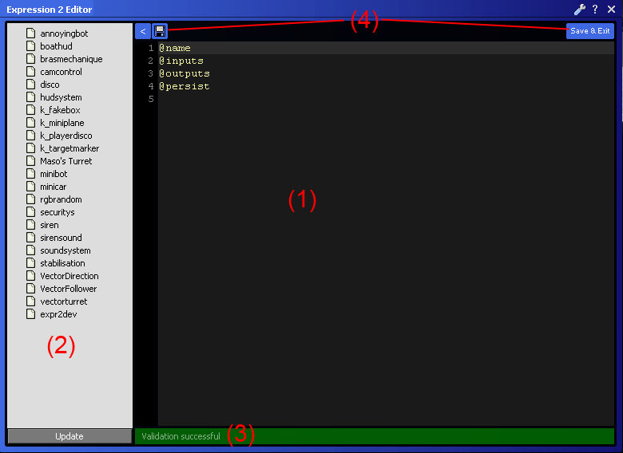
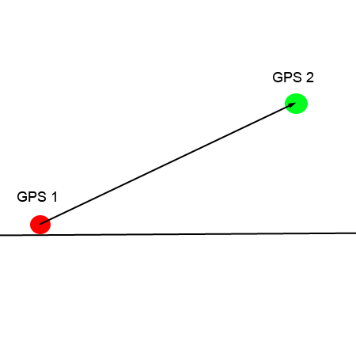
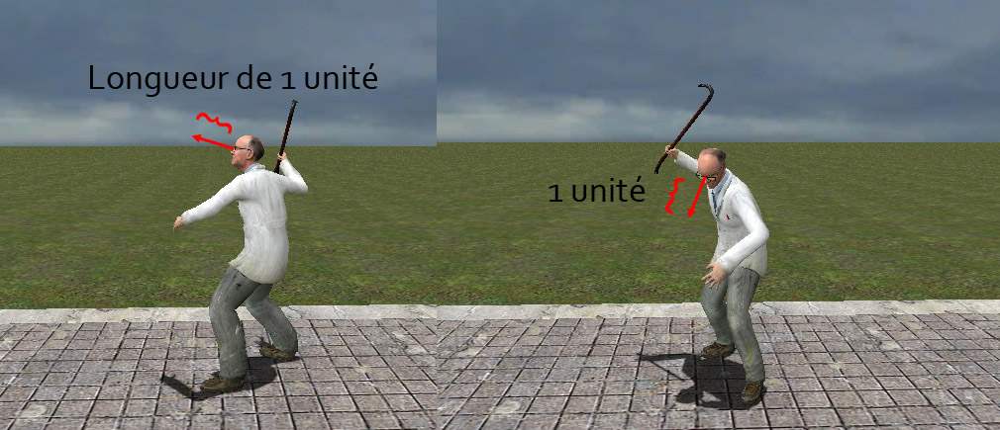

Bonjour et bienvenue dans ce tutoriel sur l'expression gate 2 du Wiremod ! Si vous êtes ici c'est que vous possédez le Garry's Mod. Par ailleurs quelques bases sur l'utilisation du Wiremod sont fortement recommandées.
Je vais quand même rappeler le principe du Wiremod :
Je vous conseille de ne pas engloutir tout le big-tuto d'une seule traite, mais d'aller à votre rythme et de prendre bien le temps de tout comprendre ;) .
On commence par un chapitre purement théorique qui vous intéressera sûrement si vous vous intéressez un peu à la mécanique du wiremod et les différents composants similaires à l'expression gate 2 que sont le CPU et le GPU. Si vous n'êtes pas trop familier avec tous les termes techniques abordés dans ce chapitre vous pouvez passer votre chemin cela ne vous handicapera pas pour la suite du cours.
Vous ne savez probablement pas ce qu'est une expression gate jusqu'alors. Vous savez peut-être que l'expression gate 2 est dans une catégorie à part, en compagnie d'autres composants... qui ont l'air similaires. Séparons les tâches.
Pourquoi ?
Pourquoi devrais-je utiliser l'expression gate 2, et non pas le CPU, ou même le GPU?
L'expression gate 2 est un chip, ou en français, une puce. Dans le cas de Garry's mod, cela veut dire qu'il est programmable. C'est-à-dire que la logique du fonctionnement d'une création n'a pas de logique par composant, qui est un composant logique (puce classique) par opération. Le CPU, GPU et expression gate sont donc modifiables par éditeur de texte.
Ajouter cinq opérations différentes sur une valeur nécessite alors cinq opérateurs ou fonctions, et ne nécessite donc pas de placer cinq composants supplémentaires sur votre création. Il supprime alors l'opération de câblage (wiring) des composants entre eux.
Mais alors, pourquoi pas le CPU ?
Le CPU est codé en langage ZASM2. C'est de l'assembleur créé uniquement pour Garry's Mod. Dans ce langage, il n'y a presque pas de variables, mais des adresses en mémoire. De plus, chaque opération à effectuer sur une variable a sa propre ligne dans le code, qui lui est entièrement dédiée. Pour exemple, voilà comment faire l'opération « adresse 65536 est incrémenté de 1 puis multiplié par l'adresse 65537 » en le laissant intact.
mov ebx,65536
mov ecx,65537
add #ebx,1
mul #ebx,#ecx
Pour information, voilà le code en expression gate 2 :
VarA = (VarA + 1) * VarB
Quel est l'intérêt de coder en assembleur me direz-vous... ^^
En fait, il existe une partie cachée du Wire : les hi-speed. En fait, le hi-speed consiste à accéder à une adresse de la mémoire d'un tiers composant en direct, et à le modifier si l'on veut en direct. À quoi cela sert ?
En fait, pour un clavier Wire (dispositif d'entrée utilisateur), le Wire classique permet de récupérer le code ASCII de la touche pressée. Mais en hi-speed, vous pouvez accéder à la charge des touches appuyées en même temps. Les combinaisons de touches sont donc détectées !
Et pour un écran de console (dispositif de sortie utilisateur), on peut écrire très rapidement du texte sur la console, quasi instantanément ! Alors qu'en wire classique, on modifie caractère par caractère à chaque tick du serveur (équivalent à une frame ou image).
Mais, depuis très récemment, on peut lire et écrire en hi-speed depuis une expression gate 2. Mais le CPU n'est pas mort pour autant : le CPU est capable de faire des boucles dans le code. L'expression gate 2 n'a pas de boucle, et techniquement ne peut pas en avoir (un tick = une exécution de l'expression gate).
Et le GPU ?
Le GPU serait intéressant à étudier. Il permet de créer des affichages graphiques frame par frame en codant en ZASM2-GPU. Il est géré coté client, c'est-à-dire que tous les joueurs d'un serveur ne verront pas la même chose que vous : il n'est donc pas possible de créer du jeu en multijoueur dans un écran GPU. Mais vous pouvez créer des affichages où l'écran est exclusivement un dispositif de rapport d'actions, et non pas d'interactivité.
Mais alors, les composants classiques sont complètement inutiles...
Quand vous vous apprêtez à créer un objet, pensez à la façon dont vous allez le montrer aux autres. Si les joueurs doivent voir un mécanisme électronique, et ainsi, analyser le cheminement de l'information entre les puces classiques, faites votre création en composants classiques. Sinon, si vous devez faire une création qui n'a une valeur effective que lorsqu'elle est utilisée, utilisez une expression gate 2.
C'est à vous de savoir si vous voulez faciliter le travail en programmant, ou donner une valeur de travail accompli en utilisant des composants classiques. Mais il y a des moments où utiliser une expression gate 2 est nécessaire, notamment lors le la programmation orientée objet sur les entités.
En fait, pour résumer, l'expression gate 2 est un chip programmable qui est de haut niveau (proche du langage courant). Il a le défaut de ne pas contenir de boucles, empêchant certaines possibilités d'opérations de lecture / d'écriture répétitives.
Comme on l'a dit, l'expression gate est une puce, elle est donc représentée par une puce unique, portant son logo. Quand vous sortez votre outil de câblage (Wire tool), vous noterez qu'elle n'a aucune entrée et aucune sortie. Mais en fait, c'est justement la particularité des expressions gates : c'est vous qui créez les entrées et sorties. C'est donc de cette manière que votre puce communiquera avec les autres composants.
Une chose principale à retenir de ce chapitre est que c'est vous qui créez les entrées et les sorties (inputs / outputs). Je vous propose maintenant d'aborder l'éditeur de l'expression gate 2 !
Pour ouvrir l'éditeur sélectionnez l'outil Chip - Expression 2 dans l'onglet Wire. Ensuite vous pouvez descendre le menu et cliquer sur Open Editor ou tout simplement fermer le menu du Garry's Mod et faire un clique-droit.
Voici une image de l'éditeur, nous allons voir les différentes parties qui le composent :

(1) le champ de saisie du code ;
(2) la liste de tous vos scripts sauvegardés (utilisez le bouton Update pour actualiser la liste) ;
(3) la barre de validation, elle vous indique toute erreur de syntaxe dans votre code ;
(4) les boutons pour sauvegarder le script et / ou quitter l'éditeur. Lorsque vous sauvegarder un fichier, on vous redemande son nom. C'est un peu ennuyant à la longue. Heureusement on peut faire un clic sur un fichier de la liste et choisir Save To pour enregistrer le code actuel dans le fichier en question
Regardons d'abord l'entête obligatoire pour chaque expression gate :
@name
@inputs
@outputs
@persist
@name : permet tout simplement de donner un nom à votre expression gate, nom qui sera visible en pointant votre viseur sur celle-ci.
@inputs : permet de définir des entrées à votre expression gate, c'est-à-dire des variables qui pourront être reliées aux sorties d'autres composants pour en récupérer les valeurs.
@outputs : permet de définir des sorties à votre expression gate, variables que d'autres composants pourront récupérer.
@persist : permet de définir des variables internes à l'expression gate, qui seront conservées d'une exécution de l'expression gate à une autre.
Les variables doivent commencer par une majuscule. Vous pouvez bien entendu en déclarer plusieurs sur un même ligne en les séparant par un espace :
@outputs VarA VarB VarC
Manipulation des variables
Je vais vous montrer comment manipuler les variables simples, c'est-à-dire celles qui ne contiennent que des nombres.
En plus de tous ces opérateurs il existe toute une boîte à outils de fonctions (mathématiques pour la plupart), qui vont bien nous simplifier la vie :) . Ces fonctions sont très nombreuses et je ne vais pas en faire la liste ici car vous pouvez la trouver à cette adresse. Mais ne vous inquiétez pas je ne vais pas vous laisser sombrer dans cet océan d'anglais sans quelques explications. Prenons, par exemple, la fonction "randint". Sur la documentation, vous pouvez lire ça :
Function
Returns
Description
randint(N,N)
N
Returns a random integer in the specified interval [a <= x <= b ]
La colonne Returns nous indique que la fonction nous donne un nombre. Sa description nous dit que la fonction donne un nombre entier aléatoire entre les deux nombres donnés en paramètres donc la fonction s'utilise de la manière suivante :
VariableAleatoire = randint(10,100)
La fonction nous donnera un nombre aléatoire entier entre 10 et 100 :) .
Schématiquement cela donne : si Condition1 est vraie alors le code entre crochets {} sera exécuté sinon si Condition2 est vraie alors le deuxième code entre crochets sera exécuté sinon on exécute le dernier code entre crochets. Le elseif et le else sont facultatifs.
Voyons maintenant la syntaxe d'une condition :
Symbole
Signification
==
Est égal à
<
Est inférieur à
<=
Est inférieur ou égal à
>
Est supérieur à
>=
Est supérieur ou égal à
!=
Est différent de
&
Et
| (Alt Gr + 6)
Ou
!
Non (inverse la condition) !0=1 / !1=0
Prenons un exemple simple : on va vérifier qu'une variable en @inputs (donc récupérée d'un autre composant) est supérieure à 10 ET inférieure à 20, et adapter la variable "Fire" en conséquence.
@name Condition simple
@inputs MaVariable
@ouputs Fire
@persist
if(MaVariable > 10 & MaVariable < 20)
{
Fire = 1
}
else
{
Fire = 0
}
On peut aussi faire abstraction de ces symboles et juste mettre la variable entre les parenthèses : if(MaVariable){...} Dans ce cas si MaVariable vaut 0 la condition sera fausse sinon pour tout autre valeur la condition sera vraie.
Si ToucheEspace a déclenché l'expression gate 2 en changeant de valeur (si elle est reliée à "Space" d'un "pod controller", cela détectera si on a appuyé ou relâché la touche espace) Ce code peut d'ailleurs s'écrire de manière plus courte :
Change = ~ToucheEspace
Si vous n'avez pas compris, le chapitre suivant explique en détail le système d'exécution de l'EG2.
Si ces deux symboles vous paraissent obscures ou inutiles, c'est pas grave ! Ils sont utilisés pour réaliser des expressions plus complexes, donc vous n'en aurez sûrement pas besoin au début ;).
Je vais quand même vous montrer une utilisation courante de ~
if(~On & On == 1) {
...
}
Ici le code sera exécuté seulement si "On" a pris la valeur de 1 depuis la dernière exécution. L'avantage c'est que le code entre crochets ne sera exécuté qu'une seule fois contrairement au code ci-dessous qui serait exécuté à chaque fois que l'expression gate se lancera et que "On" vaudra 1.
if(On == 1)
{
...
}
Les commentaires
Pour finir sur quelque chose de plus simple, je vais vous parler des commentaires. Pour en faire un, on utilise le dièse (#, Alt Gr + 3), et on écrit notre commentaire (ça doit être le truc le plus simple de l'expression gate :-° ).
@name Commentaires
@inputs Variable
@ouputs Valeur
@persist
#Je suis un commentaire.
#On peut écrire n'importe quoi dans moi, car je ne suis pas interprété lors de l'exécution de l'expression gate.
Vous pouvez mettre autant de commentaires que vous voulez, où vous voulez... Ils servent juste à donner, par exemple, des explications sur un bout de code un peu compliqué, etc.
Voilà vous connaissez maintenant les bases pour écrire vos premières Expressions Gates :) . J'espère que vous êtes encore vivants, car le cours ne fait que commencer :D .
Vous vous êtes sûrement posé une question, qui est :
À quel moment mon expression gate s'exécute-t-elle ?
La réponse est simple : l'expression gate s'exécute à chaque changement de la valeur d'une variable en entrée.
Mais là, curieux comme vous êtes (ou pas :p ), vous vous demandez peut-être ça :
Peut on exécuter l'expression gate à intervalle régulier ?
Et là, la réponse... Bien sûr !
Je vais d'ailleurs vous présenter une nouvelle fonction, faite pour cela.
La fonction "interval"
La fonction interval() permet d'exécuter votre expression gate toutes les x millisecondes (1sec = 1000ms). Exemple:
@name Interval
@inputs
@outputs Var
@persist
interval(1000)
Var++
Dans ce code la variable Var augmentera de 1 toutes les secondes.
Mais on peut aller encore plus loin car on n'est pas limité à un seul interval() ! Bien que ce soit le dernier intervalle qui est pris en compte, on peut par exemple faire varier un intervalle selon la valeur d'une variable en entrée.
Si Taux vaut 0, Var augmentera toutes les dixièmes de seconde (10 fois par seconde), mais si Taux vaut 1 ça sera toutes les secondes, et sinon toutes les deux secondes.
Pour pousser cela encore plus loin on peut directement placer une variable dans l'intervalle :
@name Interval
@inputs Taux
@outputs Var
@persist
interval(Taux*100)
Var++
Là, si Taux vaut 1, le code s'exécutera toutes les dixièmes de seconde ; si Taux vaut 10, il s'exécutera toutes les secondes, etc.
Mais rappelez-vous : l'expression gate est toujours exécutée si une variable en entrée change de valeur. C'est là qu'intervient une autre fonction toute simple...
La fonction "clk"
Si l'expression gate a été exécutée par l'intervalle, clk() retourne comme valeur 1 et seulement pendant cette exécution, sinon elle retourne comme valeur 0 entre les différentes exécutions. (Rappelez-vous des booléennes pour faire une condition avec clk() .) Un exemple concret :
Dans cet exemple, si la variable Distance change, le code sera exécuté mais la partie dans la condition ne le sera pas car clk() vaudra 0 (tordu, n'est-ce pas :D ).
Par exemple : le code sera exécuté à 1s, à 2s, à 3s, à 4s, etc. Si la variable Distance change de valeur à 1.5s, le code sera bien entendu exécuté à ce moment là. Mais comme c'est la variable Distance qui a déclenché cette exécution, clk() vaudra 0 à ce moment précis donc le code dans la condition n'est pas exécuté.
L'utilisation d'un timer est simple ; il permet d'exécuter l'expression gate dans x milisecondes après la création du timer.
On lance un timer de cette façon : timer("nom du timer", temps)
Pour savoir si l'expression gate a été lancée par le timer on utilise à nouveau la fonction clk() mais en lui donnant en paramètre le nom du timer : clk("nom du timer")
Elle retourne 1 si le timer est à l'origine de l'exécution de l'expression gate et sinon, elle retourne 0.
Exemple :
@name Exemple Timer
@inputs Bouton
@outputs Go
@persist
if(~Bouton & Bouton == 1)
{
timer("go",2000)
}
if(clk("go"))
{
Go = 1
timer("reset", 500)
}
if(clk("reset"))
{
Go = 0
}
Le code est simple si on y réfléchit bien : à l'appui du bouton un timer se met en marche et au bout de deux secondes (2000ms), la variable Go se mettra à 1 puis sera remise à 0 au bout d'une demi-seconde grâce au deuxième timer.
Suite à un ajout récent, la directive @trigger a été ajoutée.
Vous vous souvenez que l'expression gate 2 est exécutée lors du changement de la valeur des variables entrée ? Eh bien avec la directive @trigger nous allons pouvoir contrôler lesquelles de ces variables de @inputs doivent exécuter l'expression gate !
Il est possible de donner trois choses différentes à la directive @trigger :
all (par défaut) ;
none ;
une ou plusieurs des variables en entrée.
Par défaut, la directive @trigger contient le mot-clé all. L'expression gate se comportera comme avant, c'est-à-dire qu'elle sera exécutée pour le changement de valeur de n'importe quelle variable d'entrée.
Le deuxième mot-clé none permet de faire l'inverse ! Aucune des variables en entrée ne pourra exécuter l'expression gate 2.
Enfin si vous indiquez une ou plusieurs variables de @inputs dans le champ @trigger alors seules ces variables exécuteront l'EG2.
La fonction first()
Je ne savais pas trop où vous en parler alors je le fait ici. ;) En plus des toutes ces exécutions que nous avons vues, l'EG2 est exécutée une fois à sa création (ou si vous mettez à jour le code).
Ainsi la fonction first() renvoie la valeur 1 si c'est la toute première exécution de l'EG2 ; sinon elle renvoie 0. Ainsi on peut facilement mettre au point cette condition :
if(first())
{
#J'initialise ici mes variables à leur valeur de départ par exemple
}
Comme vous pouvez le voir, il est très facile de manipuler le temps avec l'expression gate 2.
Voilà, nous avons donc (déjà :p ) terminé la première partie. En route pour la deuxième, qui traite les différents types de variables !
Voilà donc la fin de la première partie, riche en découvertes. Rendez-vous à la deuxième partie maintenant !
Avant d'attaquer le vif du sujet, il faut vous expliquer comment l'expression gate 2 est organisée. C'est donc un chapitre purement théorique, mais nécessaire pour comprendre la suite. Bonne lecture !
Nous avons vu que les variables pouvaient contenir des nombres. Mais, et heureusement, elles ne sont pas limitées à ça ! En effet, elles peuvent contenir des chaînes de caractères, des vecteurs, et bien d'autres choses encore !
À la vue de ce titre, vous devez vous dire : « Encore une autre syntaxe ? Mais ça ne s'arrête donc jamais ? :o » Rassurez-vous, chers lecteurs, celle-ci est toute simple ^^ . Il suffit de rajouter, lors des déclarations des variables, le type de celles-ci après deux points.
Je pense qu'un exemple est plus parlant :
@name Variables Spéciales
@inputs Value:type
@ouputs Fire:type
@persist
#Et bien sûr le code...
Il existe plusieurs types de variables, que nous allons voir dans les parties suivantes. Mais avant ça, je dois vous parler d'une des nouveautés de l'expression gate 2 : la POO !
Concrètement, à quoi va nous servir la POO dans l'expression gate 2 ? En fait, cela permet (en gros), d'avoir pour chaque type de variables des fonctions (nommées méthodes), qui permettent de récupérer ou de modifier des informations sur celles-ci. Nous n'allons donc nous intéresser qu'à la partie utilisateur de ce langage orienté objet. On va laisser le soin aux développeurs de l'EG2 de se charger de la création de ces fonctions ^^ . Je ne vais pas vous lister toutes les fonctions (ce serait trop long), mais la documentation sur l'expression gate 2 les contient toutes. Ne soyez pas rebutés par l'anglais ; c'est très facilement compréhensible, et c'est très complet. C'est le pied lorsque vous jouez au Garry's Mod et que vous voulez connaître une fonction, ou lorsque vous avez un doute ; tout est regroupé sur cette page !
Dans l'expression gate 2, on utilise les différentes fonctions en rajoutant... :nomDeLaFonction(arguments) après la variable. Compliqué, n'est-ce pas ? :p
Maintenant que vous savez à peu près comment ça marche, attaquons notre premier type de variable : le type String !
Premier type de variable que nous allons voir : les strings. Non, on ne parlera de sous-vêtement ici (désolé pour ceux qui étaient soudainement intéressés :p ), mais bien de chaînes de caractères ou plus simplement de texte.
Premier type que nous allons aborder, les chaînes de caractères ! Elles permettent donc de contenir du texte, et d'effectuer différentes actions dessus.
Déclaration : rajouter :string après la variable.
Exemple :
@name String
@inputs
@ouputs Texte:string
@persist
Texte = "Je suis une variable de type string, je peux contenir du texte !"
# Le texte doit être entouré de guillemets ""
Spécificités : vous pouvez utiliser le symbole + pour assembler des chaînes ensemble mais aussi inclure la valeur d'une variable dans le texte.
Exemple d'utilisation :
@name String
@inputs
@ouputs Texte:string Longueur TexteLongueur:string
@persist
Texte = "Je suis une variable de type string, je peux contenir du texte ! "
Longueur = Texte:length() #Retourne la longueur de la chaîne
TexteLongueur = "Le texte fait " + Longueur + " caractères de long."
Je pense que pour vous faire la main, un exercice est nécessaire... Ça tombe bien, c'est la prochaine partie :p .
Voici donc votre premier exercice ; il est vraiment facile (mais vous allez voir, ça va devenir plus dur :D ). Je souhaite qu'une variable appelée "Temps" augmente de 1 toutes les secondes puis créez une variable de type string qui contiendra le texte suivant: "Exécution depuis xx secondes" (xx remplacer par la variable temps). Je veux aussi pouvoir relier ce texte à un composant extérieur.
... ... ...
Je pense que c'est bon maintenant ! Voici donc la correction :
C'était vraiment facile hein ?
@name ExerciceString
@inputs
@outputs Texte:string
@persist Temps
interval(1000)
Temps++
#Toutes les secondes, on incrémente la variable Temps
Texte = "Exécution depuis " + Temps + " secondes"
Voilà, nous avons vu notre premier type de variables. Maintenant, allons jeter un coup d'oeil aux vecteurs !
Nous allons maintenant voir le type vector (les vecteurs en français). Vous vous demandez peut-être ce que sont les vecteurs... Mais ne vous inquiétez pas ; ils ne piquent pas, et peuvent se révéler très utiles (voire indispensables) ;) .
Pour ceux qui savent ce que c'est, vous allez me dire « Mais qu'est-ce que les vecteurs viennent faire dans le Garry's Mod ? ». En fait, un vecteur est une variable qui contient trois valeurs X, Y et Z ; on les utilise donc pour stocker des coordonnées, ou des directions. Un vecteur direction représente le nombre d'unités à ajouter sur chaque composante (X,Y,Z) pour aller d'un point A à un point B.
Déclaration : rajouter :vector après la variable.
Exemple :
@name Vecteur
@inputs Position:vector
@ouputs Pos:vector
@persist
Pos = Position + vec(0,0,50) #On rajoute au vecteur 50 unités sur l'axe Z (vertical)
@name Vecteur
@inputs Position:vector Direction:vector
@ouputs X Y Z Longueur
@persist PositionD:vector
X = Position:x() # Je récupère les trois coordonnées indépendamment
Y = Position:y()
Z = Position:z()
Longueur = Direction:length() # Longueur du vecteur
PositionD = Position + Direction
Pratiquement similaire aux vecteurs, le type Angle permet de contenir trois angles appelés pitch, yaw et roll. Ces trois termes anglais proviennent des termes utilisés en aviation... Donc pour l'exemple on va prendre un avion ^^ .
Déclaration : rajouter :angle après la variable.
Exemple :
@name Angle
@inputs MesAngle:angle
@ouputs AutreAngle:angle
@persist
AutreAngle = MesAngle + ang(0,45,0) #On rajoute 45° sur la rotation yaw
Exemple d'utilisation de fonctions (peu nombreuses) :
@name Angles
@inputs Direction:angle
@ouputs Pitch Yaw Roll
@persist
Pitch = Direction:pitch() # Je récupère les trois angles indépendamment
Yaw = Direction:yaw()
Roll = Direction:roll()
Je profite de ce chapitre pour vous parler de la conversion des unités dans le Garry's Mod. Il existe trois fonctions toutes faites pour convertir n'importe quelles unités :
toUnit(S, N) : permet de convertir un nombre qui a pour unité l'unité de base du Garry's Mod en l'unité spécifiée ;
fromUnit(S, N) : permet de convertir un nombre qui a pour unité celle spécifiée en l'unité de base du Garry's Mod ;
convertUnit(S, S, N) : permet de convertir un nombre entre deux unités.
Par exemple :
@name Conversion
@inputs PositionA:vector PositionB:vector
@outputs Texte:string
@persist
Distance = PositionA:distance(PositionB)
Texte = "Les deux positions sont à " + toUnit("m", Distance) + "mètres de distance
Ici, j'ai converti les unités de base de Garry's Mod en mètre, ce qui est bien plus commode pour nous, humains ^^ .
Bien maintenant on va faire un exercice « assisté », c'est-à-dire que je vais vous expliquer toutes les étapes pour la réalisation d'une invention utilisant les vector !
Une invention ?
Oui, nous allons construire ensemble une plate-forme qui suit automatiquement un joueur partout où il va ! Tout d'abord nous allons utiliser comme mode de propulsion un "vector thruster" (ça tombe bien on travaille sur les vectors :-° ). Pour fonctionner un vector thruster a besoin qu'on lui envoie un vecteur direction. Nous allons donc calculer ce vecteur direction à l'aide d'un GPS et d'un target finder couplé à un beacon sensor. Je cherche donc à trouver le vecteur direction qui relie les positions GPS. Pour cela, une méthode simple : on soustrait les coordonnées de la plateforme à celle de la cible.

Sur ce schéma on voit clairement quel vecteur on doit calculer.
L'expression gate pour cette construction est extrêmement simple ! Voyez plutôt :
@name PlateformeVecteur
@inputs GPS:vector Xb Yb Zb
@outputs Vecteur:vector
@persist
interval(10)
Vecteur = GPS - vec(Xb,Yb,ZB)
#L'expression gate se charge elle même de soustraire les coordonnées X ensemble, les Y pareil et aussi les Z :D
Maintenant passons à la construction de l'engin. Sur une plaque simple placez un target finder configuré comme ceci :
"Maximum Range" est la portée maximale et la case cochée "Target Players" indique de viser les joueurs. Aucune autre case n'est cochée, le target finder ne visera donc que les joueurs. Prenez ensuite l'outil beacon sensor et cochez uniquement la case : Output world position (gps coords). Mettez-en un à côté du target finder, puis toujours avec l'outil beacon sensor faites un clic droit sur le beacon sensor (la petite poupée) puis un clic droit sur le target finder pour les relier. Prenez maintenant l'outil GPS et placez-en un à coté du reste. Mettez ensuite votre expression gate 2 précédemment créée avec le tout :
Descendez en bas de la liste des outils wire pour trouver l'outil Vector thruster à régler comme ci-dessous :
Placez-le à l'arrière de la plaque comme ceci (il faut cliquer deux fois pour créer le vector thruster correctement) :
Nous allons maintenant relier le tout ensemble : prenez l'outil Wire advanced et reliez l'entrée GPS [VECTOR] de l'expression gate 2 à la sortie Vector [VECTOR] du GPS.
Les inputs Xb, Yb et Zb de l'expression gate se relient au beacon sensor aux sorties World_X World_Y et World_Z. Pour finir l'entrée Vector [VECTOR] du thruster est à relier à l'expression gate 2 (qui n'a que cette sortie donc pas besoin de cliquer deux fois sur celle-ci ). Et voilà ! Votre plate-forme vous suit mais a tendance à balancer et cela causé par son poids. Voyons comment régler cela...
Optimisation
Tout d'abord si vous ne possédez pas encore l'outil Weight (poids en français) il serait temps de le télécharger ! L'archive est à extraire dans le dossier {"REPERTOIRE DE STEAM"\steamapps\"NOM DE COMPTE"\garrysmod\garrysmod\addons} (là où sont installés le wiremod et phx3). Cet outil va vous permettre de manipuler le poids d'un objet. Dans l'onglet tool prenez l'outil weight et mettez le poids de la plaque à 1.
Et voilà vous savez tout sur les vector ! On passe au suivant : le type entity !
Encore un type : le entity ! Il permet de contenir n'importe quelle entité ; un prop, un joueur, un véhicule, un thruster... Et d'obtenir beaucoup d'informations sur celle-ci. C'est sûrement l'un des types les plus intéressants, alors soyez attentifs (comme d'habitude, n'est-ce pas :-° ).
Ce type est donc un des plus intéressants. Il permet d'obtenir énormément d'informations sur une entité, via un "Target Finder" ou via l'ID de l'entité. Vous allez me dire : c'est quoi une entité ? Eh bien c'est simple, à peu près tout dans le Garry's Mod est une entité : les joueurs, les npcs, la caisse en bois que vous avez fait apparaître, même l'expression gate est une entité ! La variable entité contiendra alors tout un tas d'infos sur celle-ci : position (souvenirs des vectors), vie, tout une gamme de fonctions pour nous dire les différents état de l'entité (est un NPC ? un joueur ? est vivant ? ) etc. .
Toujours utile pour éviter de s'embêter à récupérer l'entité de soi-même par un target finder. Elle renvoie l'entité du propriétaire de l'EG2, c'est-à-dire celui qui la fait apparaître.
VousMeme = owner()
:pos()
Vraiment beaucoup utilisée celle là ^^ . On obtient une vector qui contient la position GPS de l'entity (pour un joueur c'est situé à ses pieds)
Position = Joueur:pos()
:shootPos()
Plutôt pratique elle permet de récupérer la position GPS de la tête du joueur.
Position = Joueur:shootPos()
:eye()
Très pratique, cette fonction nous renvoie un vecteur direction correspondant à la direction dans laquelle le joueur vise. Plus simplement la direction vers laquelle point son viseur Ce vecteur est dit normalisé, c'est à dire qu'il a une longueur de 1 unité de gmod.

En vrai le vecteur de 1 unité est beaucoup plus court que sur mon dessin. Un petit exemple simple que je vais vous expliquer :
Position = Joueur:shootPos() + Joueur:eye()*100
Que fait ce code ? C'est très simple, il suffit de partir du premier point et de faire le chemin :
On commence à shootPos() donc de la tête, exactement là où est situé la camera à la première personne.
Joueur:eye() nous dit de partie dans la direction vers laquelle vise le joueur.
Le "*100" Multiplie le vecteur direction :eye() (qui fait 1 unité) par 100 pour aller de 100 unités dans sa direction.
Donc au final la variable Position contient les coordonnées GPS d'un point situé à exactement 100 unité devant le Joueur, où qu'il regarde.
:aimPos() et :aimEntity()
Ces deux fonctions sont très utiles et vraiment simples à utiliser. :aimPos() nous renvoie la position GPS exacte de l'endroit ou vise le joueur. :aimEntity() nous renvoie l'entité que le joueur vise, c'est-à-dire l'entité sur laquelle pointe son viseur.
Autant dire qu'on nous facilite la tâche ^^ .
:isNPC(), :isPlayer(), :isAlive() ...
Voici tout un tas de fonctions qui s'utilisent principalement dans des conditions. Par exemple la fonction :isNPC() renvoie 1 si l'entité est un NPC, sinon elle renvoie 0. C'en est de même pour :isPlayer() pour tester si la cible est un joueur. :isAlive() pour savoir si l'entité est en vie.
if(Cible:isPlayer() & Cible:isAlive())
{
# Que faire si la cible est un joueur en vie ?
}
Je souhaiterai que vous me concoctiez une petite expression gate 2 : La variable Pos:vector en outputs devra contenir la position exacte de la tête de l'entité que vous (owner()) visez si celle-ci est un joueur en vie. Dans le cas contraire c'est la position à mi-hauteur que je veux (il existe une petite fonction :height() je crois ... ) Au travail !
La petite difficulté consistait à trouver le moyen d'ajouter la moitié de la hauteur au vecteur :pos() :) .
Allez avant de vous laisser je vous donne une petite idée : pour ne pas réutiliser la plateforme du chapitre précédent pour l'envoyer dans la tronche de la cible ? ... :p
Voilà c'est tout pour le type entity. Comme vous le voyez, il ouvre beaucoup de possibilités, et permet de faire bien des choses impossibles en wire classique. Maintenant nous allons voir deux nouveaux types similaires et très utiles : les arrays et les tables.
Je vais maintenant vous parler d'un type de variable assez spécial qui s'appelle le wirelink.
Les wirelinks sont une alternative aux liens (ou wires) normaux qui relient une entrée (input) et une sortie (output). Le wirelink vous permet de relier un composant quelconque à l'expression gate et de pouvoir accéder à tous ses inputs ET outputs : le wirelink est donc un lien à double sens.
À la manière des autres types de variables, on déclare un wirelink en rajoutant le suffixe :wirelink après le nom de la variable :
Pour relier un composant à votre expression gate à l'aide d'un wirelink il faut d'abord créer une sortie de type [WIRELINK] sur celui-ci Pour cela prenez l'outil appelé Expression 2 - Wirelink situé juste au-dessus de l'outil Wire Advanced permettant de relier les composants entre eux (à préférer à l'outil Wire normal).
Ensuite faites simplement un clic gauche sur votre composant et voilà !
Maintenant vous pouvez relier l'input de type wirelink de votre expression gate 2 à l'output appellé "link [WIRELINK]" nouvellement créé de votre composant :) . On va maintenant voir comment utiliser ce lien à double sens.
Imaginons que je relie ce wirelink à un composant de type Ranger pour lequel j'aurais coché les options Distance et Position. Mon Ranger possède donc 4 outputs (Dist, Pos X, Pos Y, Pos Z), plus le wirelink.
À l'aide de la fonction MonWirelink:number("Nom de l'output") je peux donc récupérer la valeur obtenue par le ranger directement depuis l'expression gate 2.
Petit exercice pratique : je souhaite créer une expression gate 2 qui permet de récupérer les trois coordonnées du Ranger à l'aide d'un wirelink et ensuite de les regrouper dans une variable de type vector.
Je vous propose deux solutions : une claire et une version compacte. Version claire :
@name Wirelink
@inputs Ranger:wirelink
@outputs Position:vector
@persist
interval(10)
X = Ranger:number("Pos X")
Y = Ranger:number("Pos Y")
Z = Ranger:number("Pos Z")
Position = vec(X,Y,Z)
Et la version compacte qui se présente sous cette forme :
Comme je vous l'ai dit au début de cette partie les wirelinks sont à double sens, il est donc possible d'assigner une valeur à un input du composant directement depuis l'expression gate 2. Reprenons encore une fois notre Ranger qui possède trois inputs (X Y et SelectValue) Pour assigner une valeur à l'input X (qui sert à décaler le rayon du ranger d'un certain angle sur l'axe horizontal) j'utilise la fonction suivante : MonWirelink:setNumber("Nom de l'input",Valeur)
Et voilà vous savez maintenant comment vous servir du wirelink !
Bien sûr, le wirelink ne se limite pas aux nombres, c'est pour cela que je vous invite à aller faire un petit tour du côté de la doc (hé oui encore !) pour savoir par exemple quelle fonction utiliser pour récupérer l'entité d'un target finder via un wirelink (variable de type entity abrégée par un E dans la doc ;) ).
Et voilà, vous savez maintenant ce qu'il se cache derrière le wirelink. Notre tour d'horizon des types de variable s'achève, et marque la fin du tutoriel (en attendant d'autres chapitres :p ).
Les arrays et les tables sont des types très similaires qui permettent de stocker un grand nombre de données facilement. Voyons tout de suite comment ça marche :) .
Comme je vous l'ai indiqué les arrays et les tables sont fortement similaires mais concrètement comment ça marche ? Ces deux types permettent de stocker un grand nombre de données. Il est possible de stocker dedans des Nombres, des Strings, des Vecteurs, des Angles et des Entités. Chaque donnée est indexée pour pouvoir être récupérée plus tard. On peut représenter les arrays et les tables par un simple tableau.
Index
1
2
3
Données
37
55
78
Mais les arrays et les tables diffèrent sur cet Index :
Utilisation : c'est plutôt simple, par exemple la fonction :setNumber(Index,Nombre) permet de stocker un nombre à l'index voulu. Je vous renvoie encore une fois à la documentation pour la liste de toutes les fonctions.
@name Array
@inputs Ecriture EcrireIndex LireIndex Donnee
@output DonneeSortie
@persist Tableau:array
#Ici pas d'interval nécessaire.
if(~Ecriture & Ecriture) #Quand on appuie sur le bouton, le code ne s'exécute qu'une seule fois
{
Tableau:setNumber(EcrireIndex, Donnee)
}
DonneeSortie = Tableau:number(LireIndex)
L'avantage des arrays sur les tables c'est que les données sont ordonnées. Il existe donc des fonctions comme :push<type>(*) qui permet de rajouter des données à la fin de l'array. Je vais vous expliquer comme l'utiliser :
<type> doit être remplacé par le type voulu avec la première lettre en majuscule de cette façon : :pushNumber(*) ou :pushString(*) ;
* indique qu'il faut donner en paramètre une variable de type correspondant au <type>.
L'utilisation des tables est la même que pour les arrays, les fonctions ont même le même nom que celles pour les arrays :p .
Déclaration : On rajoute :table après le nom de la variable :-° .
On passe tout de suite aux différences avec les arrays. Les données d'une table ne sont pas ordonnées, il n'existe donc pas de fonction comme :push<type>(*) pour les tables.
Mais alors quel intérêt y a-t-il à utiliser les tables ? o_O
J'y arrive ^^ . Les tables deviennent très utiles pour stocker par exemple des infos sur les joueurs, quel que soit le nombre de joueurs sur le serveur, etc. Il suffit de choisir le nom du joueur comme index (Entity:name() ;) ). Avec les arrays comment savoir que l'index n°3 correspond à tel joueur ? Un petit exemple ?
Je récupère une id d'entité quelconque (d'un Ranger par exemple)
Dans cet exemple chaque joueur qui se mettra devant le ranger aura son propre nombre points qui augmentera de 1 toutes les secondes tant qu'il restera devant le ranger. Si ce n'est pas un joueur la valeur en sortie vaudra -1 pour l'indiquer.
Et voilà, c'est déjà fini pour cette partie ! Presque toutes les possibilités vous sont ouvertes maintenant ; laissez juste libre cours à votre imagination...
Voilà, vous savez (presque) tout sur l'expression gate 2 ! D'autres chapitres sur des fonctions plus avancées arriveront (peut-être) bientôt. Revenez régulièrement pour voir les mises à jour !

{kind=link}
{kind=link}
{kind=link}
{kind=link}
{kind=link}
{kind=link}
{kind=link}